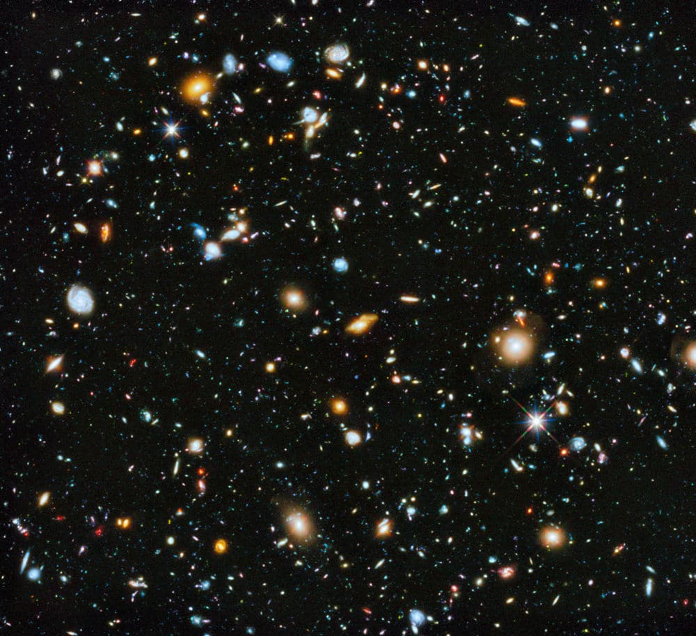

Supercumulos
Los supercúmulos son las estructuras más grandes conocidas del universo.
Están formados por la unión de muchos cúmulos de galaxias y galaxias individuales,
todos ligados por la gravedad.

Ejemplos importantes
- Supercúmulo de Virgo
- Es donde se encuentra la Vía Láctea.
- Contiene más de 2,000 galaxias.
- Supercúmulo de Laniakea
- Es la estructura que agrupa al Supercúmulo de Virgo.
- Tiene más de 100,000 galaxias.
- Se extiende unos 500 millones de años luz.
- Supercúmulo de Hércules
- Uno de los más masivos observados.
Características principales
- Pueden contener decenas de miles de galaxias.
- Suelen extenderse a lo largo de cientos de millones de años luz.
- Están compuestos por galaxias, cúmulos de galaxias, materia oscura y gas caliente.
- No están distribuidos uniformemente: forman una especie de “red cósmica” con vacíos enormes entre ellos.
Volver al inicio